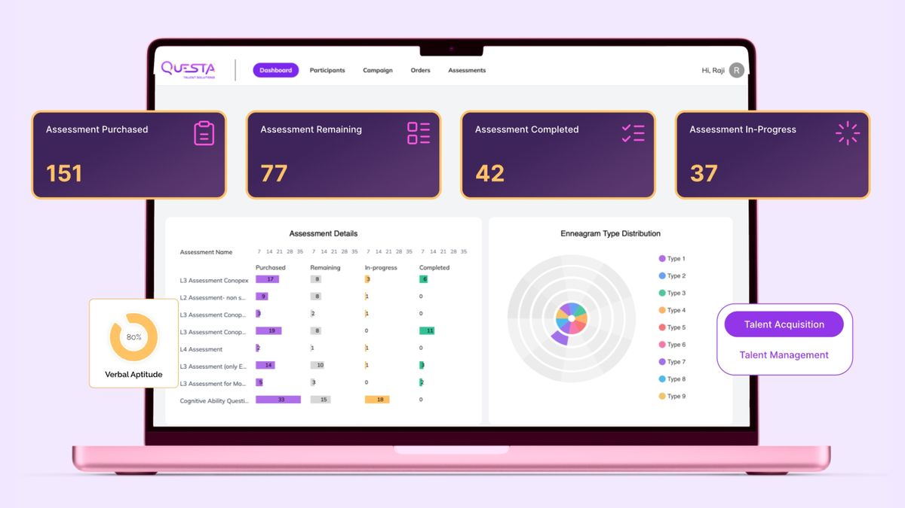
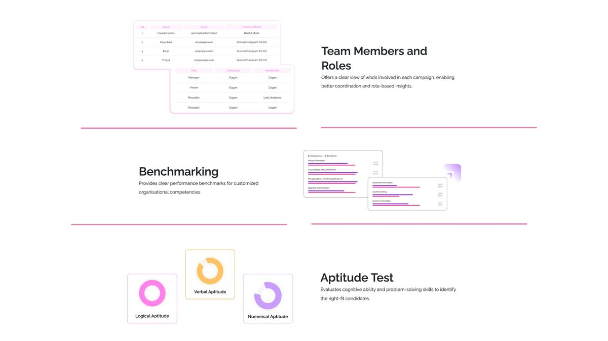
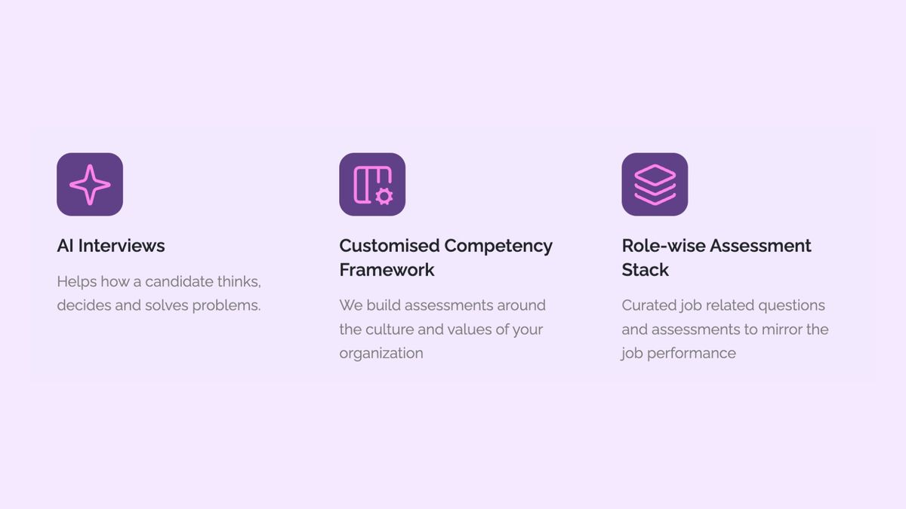
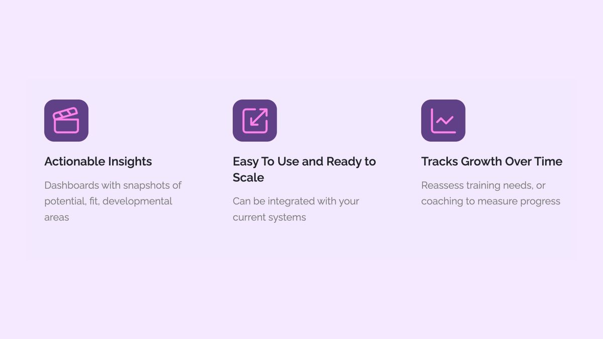

Building a Customisable Talent Assessment
Platform in a Market That Only Served Enterprise





Questa Talent Solutions Pvt. Ltd. works in talent assessment and organisational development, helping companies hire, manage and develop their people through psychometric assessment and structured competency evaluation.
The company was undertaking a fundamental transition: from delivering expertise as a consultancy service to delivering it as software. That shift changes everything about how the work is done — it introduces requirements documentation, release cycles, test and production environments, backend logic and the discipline of shipping something other people operate without you in the room.
As a small company, delivery ran on short turnarounds and dense cross-functional collaboration — engineering, design, research, HR subject-matter experts and business stakeholders working in direct contact rather than through layers of process.
The talent assessment software market was structurally bifurcated. Large enterprises had access to configurable platforms with proper role architecture, dashboards and reporting. Everyone else had fixed, off-the-shelf instruments that could not be modified.
The consequence is worse than a feature gap. An organisation assessing candidates against somebody else’s competency model is measuring the wrong thing precisely — a generic framework does not describe what good performance looks like in this company, and a hiring decision made on that basis is confidently wrong.
The technical problem was building a system that stayed coherent while being customisable, requiring backend logic connecting a configurable framework to assessment delivery to report generation, working identically in test and production. A talent platform is also not one product — it is four products sharing a database, each user type holding a conflicting definition of a good experience.
The platform was built to give mid-market organisations what only enterprise buyers previously had: a configurable assessment system tied to their own competency model.
The 250+ item competency framework, built from structured expert interviews and evidence synthesis, was designed as a configurable substrate rather than a fixed instrument — organisations could select and adapt against their own definitions of performance while retaining a defensible evidence base.
A manager dashboard sat at the centre of the product decision. Hiring managers do not need psychometric data; they need an interpretable comparative verdict. The dashboard was designed to convert assessment output into hiring insight, with backend logic handling scoring, aggregation and automated report generation.
Four user types were architected with separate workflows and permission structures: test-takers needing a calm, low-anxiety environment where interface friction does not become measurement error; hiring managers needing interpretation, not raw data; recruiters needing bulk operations and pipeline visibility; and administrators needing configuration and repository control. Permission architecture was designed as the connective layer — a compliance question before a UX one, given the sensitivity of assessment data.
Seamless movement between test and production environments was treated as a first-order requirement rather than an engineering detail, because an assessment platform that behaves differently in production is not merely inconvenient — it is invalid.
The platform was designed and shipped end to end, taking a talent business from service delivery into software delivery. For a small company on short turnarounds, shipping a multi-role enterprise system with configurable competency architecture, a manager dashboard and automated reporting is a substantial delivery outcome.
The market reframe is the significant part. Configurable assessment technology had been the preserve of organisations large enough to fund enterprise licences. Building customisation into the architecture rather than treating it as a premium tier meant an organisation could assess against its own competencies — which is the difference between measurement that is precise and measurement that is merely consistent.
The 250+ item competency framework informed new product development priorities, becoming a roadmap asset rather than only serving the current build.
Working in direct contact with engineering, design, research, HR subject-matter experts and business stakeholders under short delivery cycles meant design decisions were validated fast and shipped fast. Promotion from Associate to Manager within eight months followed directly from that delivery.
Longer term. The configurable competency architecture is the platform’s most durable asset: new modules — assessment centres, succession planning, performance management, pulse surveys — can be built against an existing permission, scoring and reporting structure rather than requiring redesign. Every new instrument built against the framework inherits an established evidence base. For a business making the transition from consultancy to product, this is the difference between software that scales and software that requires its authors present to operate.
- 01Requirements definitionProduct and business requirements documented in collaboration with engineering leadership, business stakeholders and HR subject-matter experts, translating service-delivery expertise into specified software behaviour and locked release scope.
- 02Competency architecture and instrument design250+ item competency framework built from structured expert interviews and evidence synthesis, designed as a configurable substrate, with psychometric assessment instruments designed against it.
- 03Role architecture and interface designFour user types mapped as separate journeys with distinct information hierarchies, permission structures designed as the connective layer, and the full platform interface built in Figma alongside the company website in Adobe XD.
- 04Backend logic and environment integrationAssessment delivery, scoring, aggregation and automated report generation specified with engineering, with seamless parity between test and production environments treated as a first-order requirement.
- 05User testing and release validationMulti-phase moderated usability studies across all four user groups with cross-group comparative analysis, plus A/B testing establishing pre-launch baselines and post-release benchmarking, delivered into engineering sprint cycles.
- Designed and shipped a multi-role enterprise SaaS talent assessment platform end to end, mapping role-based workflow architectures and permission structures in Figma across four user types and ensuring interface logic reflected researched user mental models.
- Authored product and business requirements documentation in direct collaboration with engineering, design, research and HR stakeholders, defining release scope and backend logic for assessment delivery, scoring and automated report generation.
- Built a 250+ item configurable competency framework from expert interviews and evidence synthesis, enabling organisations to assess against their own competencies rather than fixed off-the-shelf instruments, and informing new product development priorities.